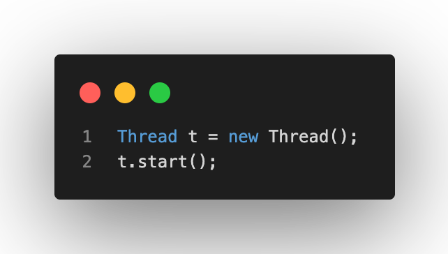
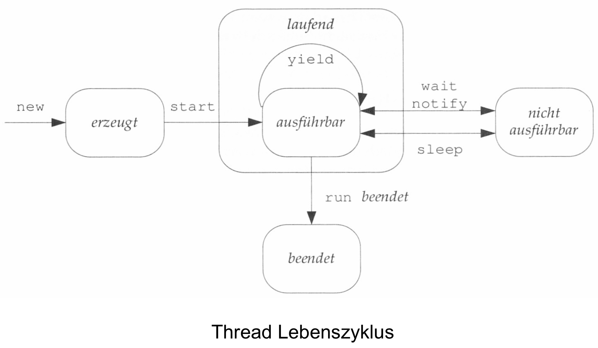
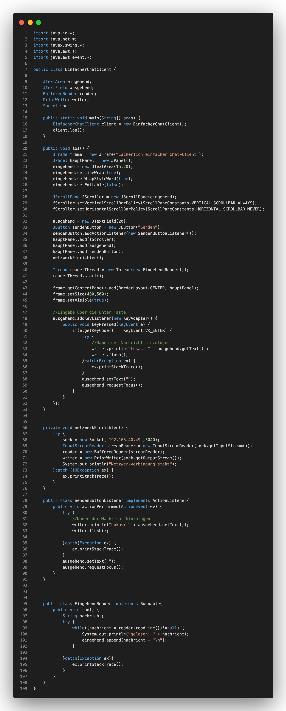

Was braucht man um einen einfachen Chat-Client zu schreiben? Zunächst braucht man ein TextField, das den Chatverlauf mit allen gesendeten und empfangenen Nachrichten plus den Name des Senders abbilden kann. Weiterhin wird ein Input benötigt, der die Nachricht die man gerade schreibt anzeigt. Um diese Nachricht senden zu können wird dann ein Button mit ButtonListener benötigt. Sobald dieser betätigt wird, soll er die Nanchricht die im Input-Feld stehen an den Server senden, sodass diese im TextField angezeigt wird.
Threads
Die Klasse Thread umfasst die Methoden, die einen Thread starten, schlafen legen oder zwei Threads verbinden. Dadurch, dass Threads sehr schnell hintereinander ausgeführt werden, kann sogar der Eindruck entstehen, dass mehrere Dinge gleichzeitig geschehen. Dies ist aber nur den Eindruck den wir Nutzer haben, denn mit einem Prozessor ist es nicht möglich.
Multithreading
Multithreading hingegen ermöglicht die parallele Ausführung mehrer Handlungen. So kan ein Nuter mit dem User Interface (UI) ohne Einschränkungen agieren und gleichzeitig kann ein weiteres Programm im Hintergrund arbeiten, das am Beispiel des Chat-Clients auf neue Nachrichten wartet, um dieses im UI dem Empfänger anzuzeigen. Somit ist Multithreading extrem wichtig für die User Experience (UX) / Benutzerfreundlichkeit.
Wie der Name bereits sagt werden für das Multithreading mehrere Threads auf unterschiedlichen Stacks benötigt, die unterschiedliche Aufgaben verfolgen. Zusätlich wird, wie im Kapitel Threads bereits erwähnt, ein Multiprozessorsystem benötigt. Um den Wechsel zwischen den Threads zu ermöglichen, wird ein Thread-Scheduler benötigt.
Die Klasse Thread aus dem java.lang-Paket ermöglicht dann die Umsetzung des Multithreadings in Java. Um einen Ausführungs-Thread zu starten, muss eine Instanz der Klasse Thread erzeugt werden. Diese enthält die Methoden, die den Thread starten, schlafen legen oder mit anderen Threads verbindet. Wichtig ist dabei, dass der Hauptthread immer innerhalb der main()-Methode gestartet wird. Wenn weiter Threads verwendet werden sollen, lässt sich das ganze folgendermaßen umsetzen:

Der Thread dieses Beispiels würde jedoch direktr "sterben", da er keine Aufgabe hat. Eine Aufgabe wird dabei mithilfe des Runnable-Objekts festgelegt. Die Klasse Runnable wird durch ein Runnable Interface implementiert und stellt die Methode run() bereit, die an erster Stelle auf dem Stack des neuen Threads steht. Der Thread Konstruktor bekommt das Runnable Objekt übergeben und somit kann der Thread gestartet werden. Die Ausführungdauer und der Ausführungsstart werden dabei, wie bereits erläuert, durch den Thread-Scheduler bestimmt. Dabei hat der Thread einen Lebenszyklus, in dem er verschieden Zustände annehmen kann:

Den Zustand new nimmt ein Thread ein, wenn er erzeugt, aber noch nicht gestartet wurde. Wenn der Thread gestartet wurde, wechselt er zwischen den Zuständen ausführbar/lauffähig und nicht lauffähig/blockiert. Wenn der Thread bereit zur Ausführung steht, aber noch nicht vom Thread-Scheduler ausgewählt wurde, hat er den ZUstand lauffähig. Im Zustand beendet befindet sich ein Thread, wenn der gesamte Stack des Threads abgearbeitet wurde.
Übung 4
In Übung 4 haben wir zunächst den Chat-Client aus der Vorlesung abgeschrieben. Dabei müssen wir die IP-Adresse und den Port anpassen, um den Server, den uns der Dozent bereitgestellt hat, nutzen zu können. Eine Alternative dazu ist ein eigener Server. Den Code dazu haben wir ebenfalls erhalten. Danach testeten wir den Chat-Client. Nachdem wir sicherstellen konnten, dass alles funktionsfähig ist, war es unsere Aufgabe 3 Erweiterungen einzubauen: Die erste Erweiterung ist das Programmieren eines KeyListeners, damit eine Nachricht über das Betätigen der Enter-Taste gesendet werden kann. Erweiterung 2 ist, dass der Name des Senders nicht manuell vor jeder Nachricht eingegeben werden muss, sondern automatisch beim Senden der Nachricht mitgegeben wird. Die letzte Erweiterung ist das Einbinden der UTF-8 Zeichentabelle, damit Sonderzeichen korrekt genutzt werden können. Die Lösung des Codes sieht dabei wie folgt aus:

Das Ganze sieht in der praktischen Umsetzung dann wie folgt aus: